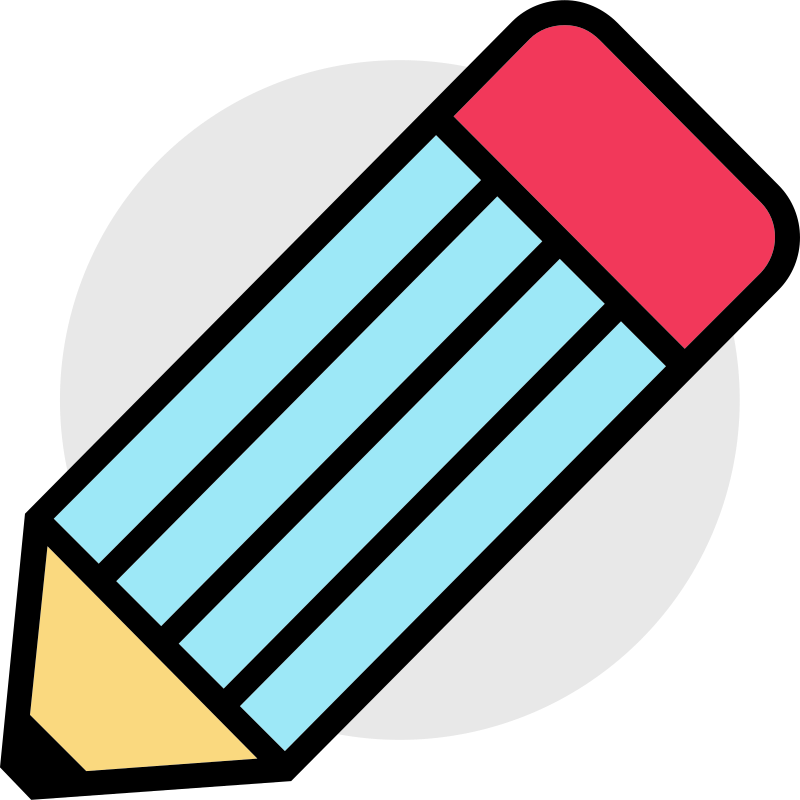

<section style="text-align: center;">

    <h1>Welcome to Whiteboard Manager!</h1>
    <div class="example-button-row">

    </div>
    <mat-card class=" landing-card">
        <mat-table [dataSource]="whiteboards">
            <ng-container matColumnDef="name">
                <mat-header-cell *matHeaderCellDef>Name</mat-header-cell>
                <mat-cell *matCellDef="let whiteboard">{{ whiteboard.name }}</mat-cell>
            </ng-container>

            <ng-container matColumnDef="action">
                <mat-header-cell *matHeaderCellDef>Action</mat-header-cell>
                <mat-cell *matCellDef="let whiteboard">
                    <button mat-raised-button (click)="openWhiteboard(whiteboard.id)" color="primary">

                        <!-- <mat-icon color="accent">remove_red_eye</mat-icon> -->
                        Open
                    </button>
                </mat-cell>
            </ng-container>

            <mat-header-row *matHeaderRowDef="['name', 'action']"></mat-header-row>
            <mat-row *matRowDef="let row; columns: ['name', 'action']"></mat-row>
        </mat-table>
    </mat-card>

    <button mat-button color="primary"
        style="background-color: #4758b8;margin: 1rem 0rem;color:white;width: 100%;font-size: 1.25rem; display: flex;justify-content: center; align-items: center; "
        (click)="openWhiteboard('')">
        
        DRAW
    </button>
</section>